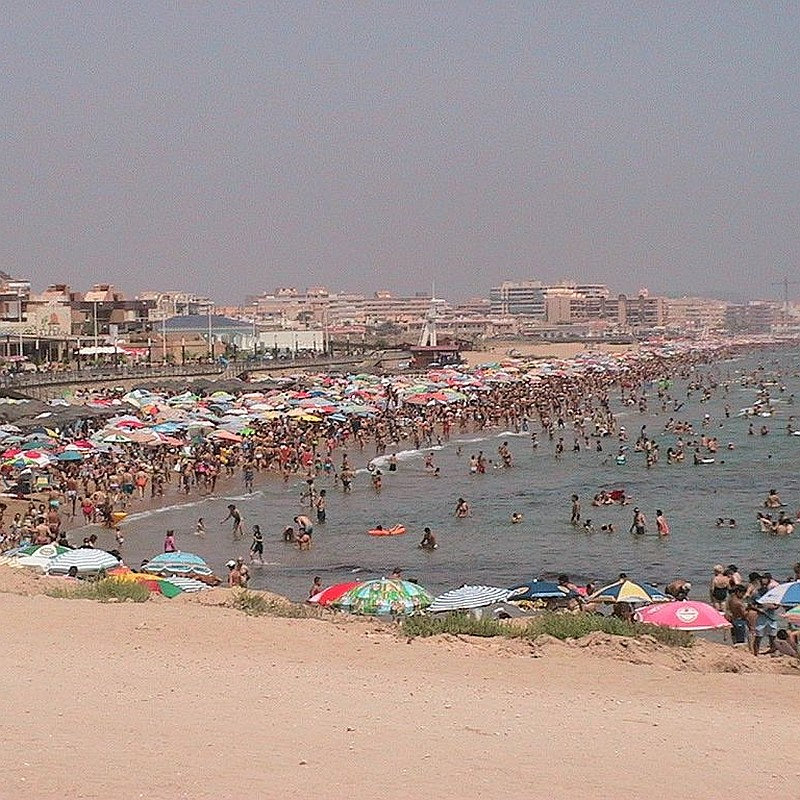

Плайя де ла Мата (Playa de la Mata)
Плайя де ла Мата – это самый большой пляж в Торровьехе, длиной 2363 м и шириной 47 м. Здесь есть восемь волейбольных площадок, одно футбольное поле и водные велосипеды, в летние месяцы есть несколько пляжных баров.
Плайя де ла Мата – это самый большой пляж в Торровьехе, длиной 2363 м и шириной 47 м. Здесь есть восемь волейбольных площадок, одно футбольное поле и водные велосипеды, в летние месяцы есть несколько пляжных баров.


Плайя де лос Локос (Playa de los Locos)
Плайя де лос Локос ("Безумный пляж") носит название бывшей больницы неподалеку. Это песчаный пляж недалеко от побережья от Плайя дель Кура. Он простирается на длину 760 м и ширину 27 м. Рядом автостоянки, рестораны и бары. Здесь может быть многолюдно.
Плайя де лос Локос ("Безумный пляж") носит название бывшей больницы неподалеку. Это песчаный пляж недалеко от побережья от Плайя дель Кура. Он простирается на длину 760 м и ширину 27 м. Рядом автостоянки, рестораны и бары. Здесь может быть многолюдно.


Плайя дель Кура (Playa La Cura)
Плайя дель Кура считается лучшим пляжем в городе. Этот пляж меньше, чем Плайя де лос Локос (длина 375 м и ширина 27 м). Этот пляж тоже является многолюдным.
Плайя дель Кура считается лучшим пляжем в городе. Этот пляж меньше, чем Плайя де лос Локос (длина 375 м и ширина 27 м). Этот пляж тоже является многолюдным.
_-_panoramio.jpg")

Плайя дель Асекион (Playa del Acequion)
Плайя дель Асекион является продолжением Плайя де лос Науфрагос на северо-восточной стороне соляной набережной, в районе порта.
Плайя дель Асекион является продолжением Плайя де лос Науфрагос на северо-восточной стороне соляной набережной, в районе порта.


Плайя де лос Науфрагос (Playa de los Náufragos)
Плайя де лос Науфрагос, рядом с гаванью и портом, является еще одним популярным пляжем. Находится близко города, с хорошим доступом из центра Торровьехи, что к сожалению, приводит к многолюдности. Это длинный и широкий пляж – 325 м в длину и 77 м в ширину. Этот пляж, отмеченный Голубым флагом, обеспечивает немного тени благодаря пальмам на песке, а также здесь находится небольшой аквапарк для детей.
Плайя де лос Науфрагос, рядом с гаванью и портом, является еще одним популярным пляжем. Находится близко города, с хорошим доступом из центра Торровьехи, что к сожалению, приводит к многолюдности. Это длинный и широкий пляж – 325 м в длину и 77 м в ширину. Этот пляж, отмеченный Голубым флагом, обеспечивает немного тени благодаря пальмам на песке, а также здесь находится небольшой аквапарк для детей.


С Науфрагос до Кала Питерас (Cala Piteras)
Можно прогуляться (примерно 2 км) по разнообразному берегу моря. Берег местами песчаный, галечный, каменный или травянистый. Рядом с выходом к морю из квартиры есть удобная лестница для спуска к морю. Это прекрасные места для подводного плавания и любования рыбами. Здесь на лужайке можно также загорать на шезлонгах.
Можно прогуляться (примерно 2 км) по разнообразному берегу моря. Берег местами песчаный, галечный, каменный или травянистый. Рядом с выходом к морю из квартиры есть удобная лестница для спуска к морю. Это прекрасные места для подводного плавания и любования рыбами. Здесь на лужайке можно также загорать на шезлонгах.


Плайя Кала Феррис (Playa Cala Ferris)
На южном конце Торревьехи находится менее известный, маленький и прекрасный пляж с пальмами, маленькими дюнами и кристально чистой водой. На рассвете или закате Вы также услышите крики попугаев. Это идеальный пляж для плавания и дайвинга. В чистых водах Вы можете увидеть различные виды рыб.
На южном конце Торревьехи находится менее известный, маленький и прекрасный пляж с пальмами, маленькими дюнами и кристально чистой водой. На рассвете или закате Вы также услышите крики попугаев. Это идеальный пляж для плавания и дайвинга. В чистых водах Вы можете увидеть различные виды рыб.

Кала Питерас (Cala Piteras)
Это небольшой пляж (123 м длины и 15 м ширины). Идеально подходит для плавания и дайвинга. Здесь находится один из самых впечатлающих подводных лугов посидонии в поблизости. Трава посидония, которая является важной частью экосистемы, лучше всего растет в чистой воде, поэтому это признак того, что Вы плаваете в одной из лучших частей Средиземноморья.
Это небольшой пляж (123 м длины и 15 м ширины). Идеально подходит для плавания и дайвинга. Здесь находится один из самых впечатлающих подводных лугов посидонии в поблизости. Трава посидония, которая является важной частью экосистемы, лучше всего растет в чистой воде, поэтому это признак того, что Вы плаваете в одной из лучших частей Средиземноморья.